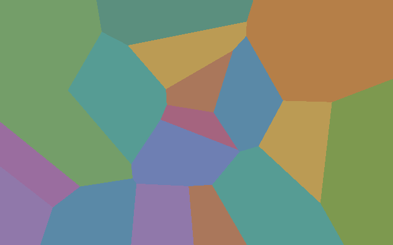
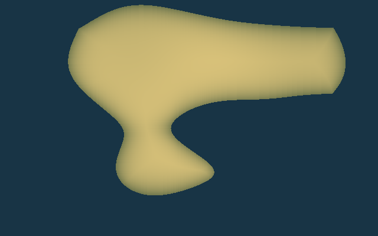
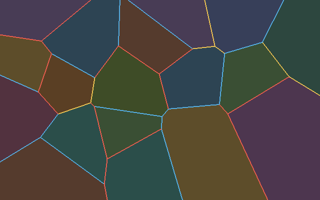
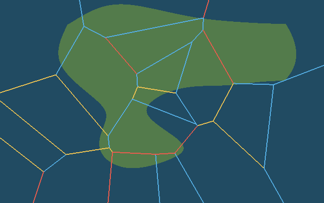
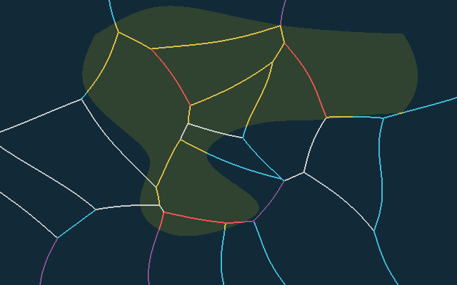
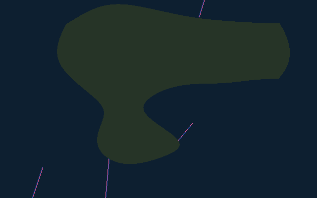
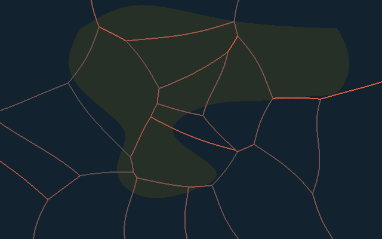

Geo
World Generator
Phase 1 Lab
返回世界总览
板块与大陆骨架实验
Seed → Plate → Boundary → Elevation
注意：
当前是算法实验，不是最终世界效果。这里故意把“板块”和“大陆地壳”简化得很粗，用于验证边界分类与构造地貌因果链。
原始 Voronoi 对照
未自然化
自然化板块分区
平滑 Domain Warp

地壳类型
大陆 / 海洋
海岸距离
陆地向内变深绿 · 海洋向外变深蓝
大陆地壳厚度
浅色=较厚 · 深色=较薄

无构造基础高程
先形成大陆架 / 大陆坡 / 海盆
宏观地形分区
大陆 / 海岸 / 陆架 / 陆坡 / 海盆 / 构造地貌
板块边界
红=汇聚 · 蓝=张裂 · 黄=转换

地壳 + 构造边界
检查大陆是否跨板块

构造地貌类型
碰撞山系 / 火山弧 / 海沟 / 岛弧 / 洋中脊 / 裂谷

海洋地壳年龄
亮青=年轻 · 深蓝=古老
俯冲两侧
蓝=海沟 · 橙=大陆火山弧 · 粉=岛弧

构造强度
由相对速度 / 地壳厚度 / 海洋年龄共同决定

构造影响带
暖色=抬升 · 蓝色=下沉
宏观最终高程
基础海陆地形 + 构造影响 + 少量粗糙度